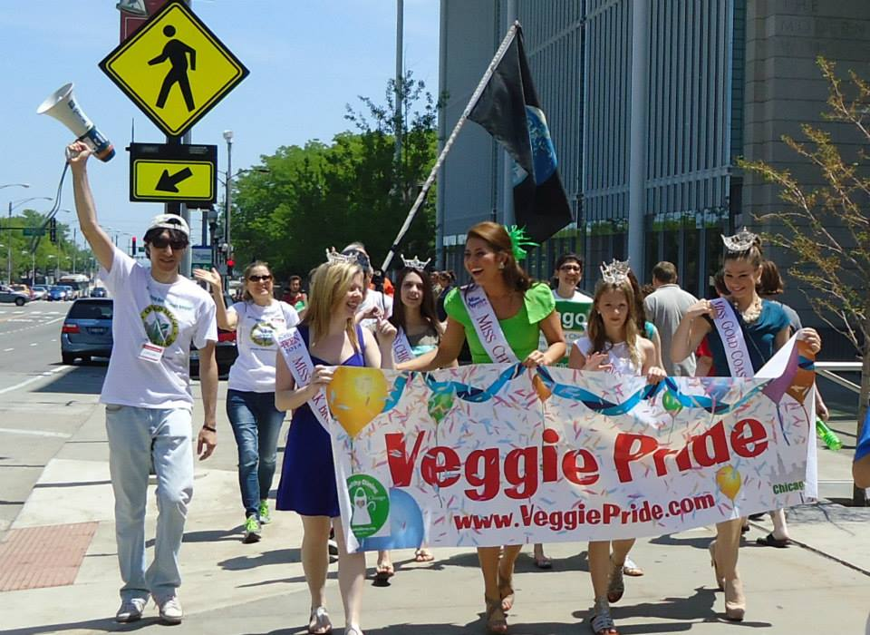

First speech at the 3rd annual CVPP event
This is an extended version of the first speech (a shorter version was actually presented) at the third annual CVPP on May 31, 2014.
Thank you everyone for joining us today! It's great to see so many happy faces here!
As an organizer of many events to support local vegetarians and vegans I often meet people who try to be supportive even if they are not vegetarian. When I speak with people and they find out that I am a vegetarian or vegan I occasionally hear "I am pretty much vegetarian too: I don't eat meat either, only fish... and maybe chicken once in a while." When I hear this, I immediately feel a need "to educate" this person that vegetarian means not eating any meat at all (including sea food and poultry). I also feel a need to say that, while being a "partial" vegetarian is a step in the right direction, it's not nearly as beneficial as fully going vegetarian, or, even better - vegan.
Has anyone had this experience? The experience when you talk with other people and they say that they are pretty much vegetarians or vegans you almost feel a need to let them know that they can not call themselves vegetarian or vegan unless they truly are, and a strong urge to push them in this direction?
First of all we need to recognize that this urge to push people toward veganism is very natural. Since many of us are aware and realize the benefits of a switch to a plant-based diet we naturally would like others to experience and multiply these benefits.
The problem is that, when we become so passionate about it, our listeners often perceive us attacking them: "You should not eat any animal products at all", "Eating meat is bad for you", "It causes unnecessary suffering of other living beings", "It's devastating to the environment". Basically what we are saying is often viewed as a guilt trip, blaming, or simply arguing.
Let's try to analyze what happens here: The person tried to connect with us by suggesting something in common between us. And what we are doing? - We are saying "No" - Unless you will be exactly like me, it's not good enough! As a result it seems like we are picking a fight which leads to alienating ourselves.
It doesn't mean we should not educate people about the advantages of a plant-based diet. The point is that how we choose to communicate our ideas may lead to either success or failure.
Another example: Who has heard that Jennifer Lopez recently chose a vegan diet? There were a few recent articles in the press that she went vegan (meaning dietary vegan). Some of you may expect a positive reaction from the vegan community as many of her fans had probably not heard the word vegan before at all. So, regardless of her reasons for choosing a vegan diet or how long she continues it, it significantly spreads the word about veganism in the public. However, there were a lot of negative responses from the vegan community. For example: "She is NOT vegan if she wears fur.", "She wears fur - I wish her to die!", "Veganism is a lifestyle and not just a diet.", "She’s probably doing it only for a trend or health reasons.", and so on, and so on.
It's very understandable if we feel this way. And we all may feel this way to one extent or another. The question is if a person takes a step in a positive direction even for a day, should we appreciate it or be negative about it? If you had a chance just to send her a single message would you rather send her "I hate you for wearing fur" or "Thank you for choosing a vegan diet"? Which message do you think would be better for her, for us, and for animals? Do we really believe that a guilt trip or condemnation is better than positive reinforcement?
We can be right that "true veganism" is not just a diet. We can be right that choosing to be vegetarian only on Mondays is not as beneficial as a complete switch to a vegetarian diet. We can be right that a vegan diet is even more humane than a vegetarian diet. But does it help if other people perceive us as being full of criticism and negativity?
Some people just take baby steps in the right direction. Let's be easy on them!
Let's remember the advice of wise people: "If you can choose between being right and being kind - Choose kind".
Let's remember that veganism is about being compassionate to all living beings. All living beings includes humans. And I know that it's often much more difficult to be compassionate to our own kind than to animals. But if we can't be compassionate to even ourselves how do we expect to be compassionate to animals?
We may often hear "Let's fight for veganism!" I'd like to offer you another approach: "Let's be kind for veganism". Let's be kind to everyone (including people who see things differently than we do). Let's try to fill our hearts with loving kindness rather than righteous hatred. Let's celebrate our choices and invite everyone to celebrate them with us, even if we don't share exactly the same beliefs. Let's focus on our common goals rather than our differences. That's the idea of today's event. Thank you for joining us for the positive reinforcement of our common beliefs!